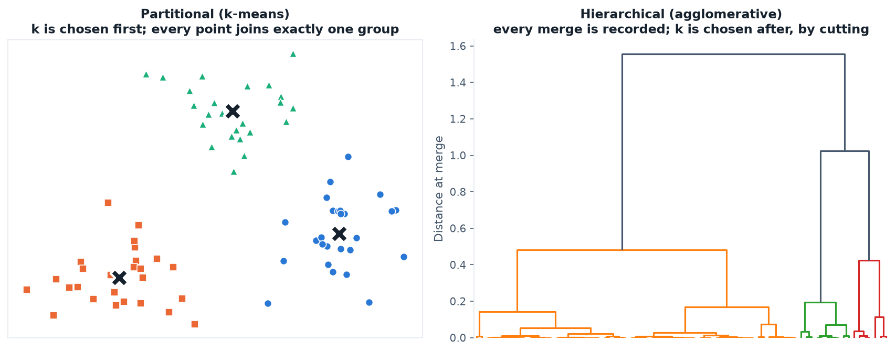
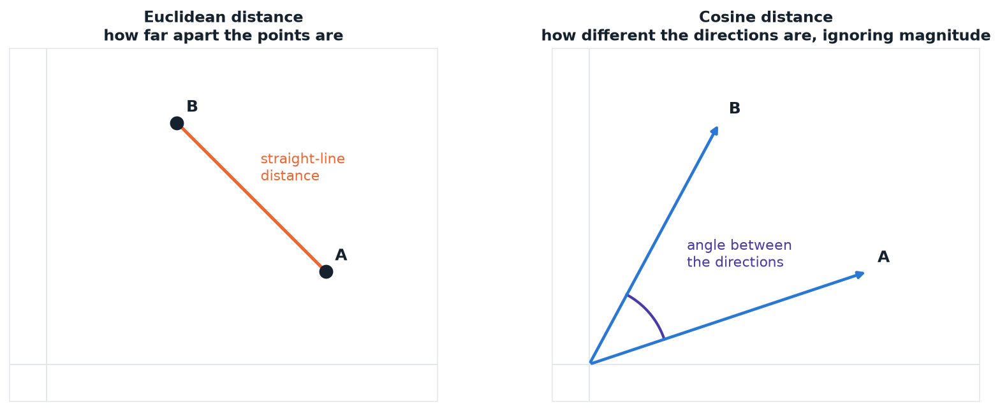
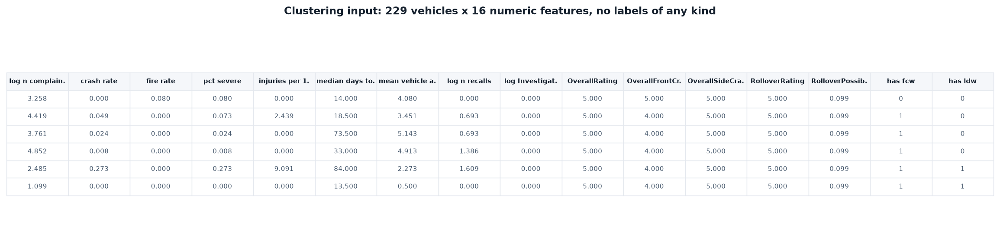
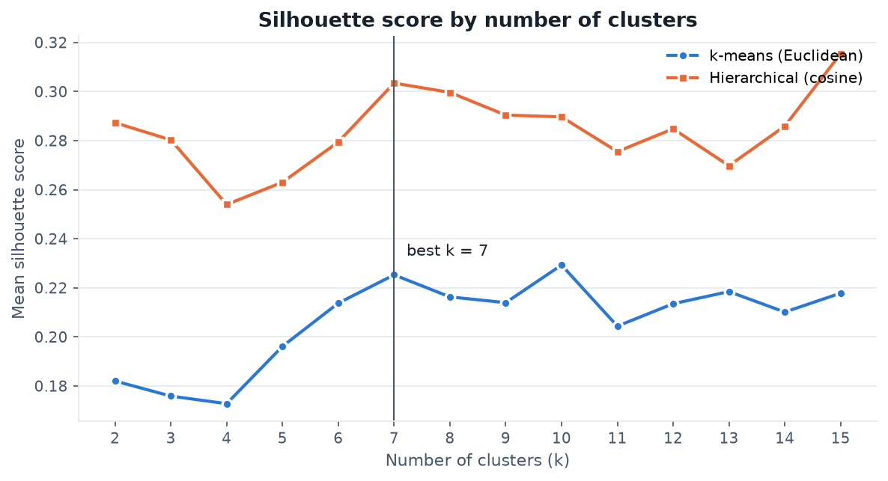
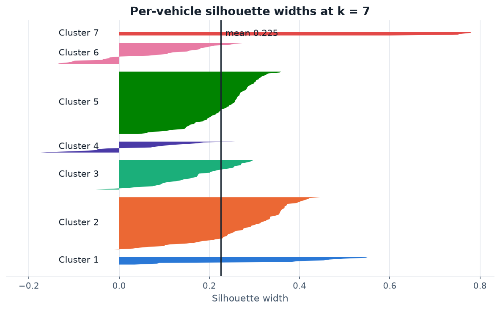
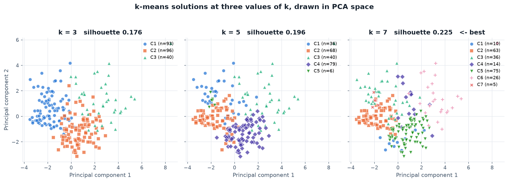
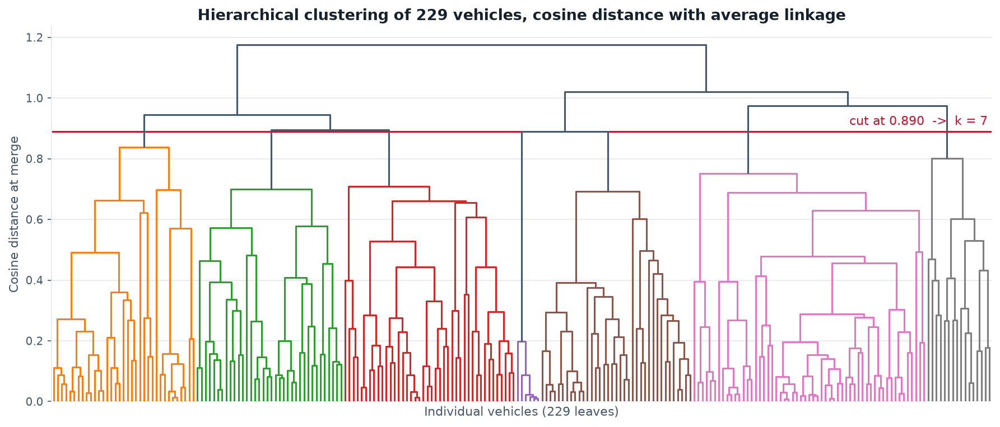
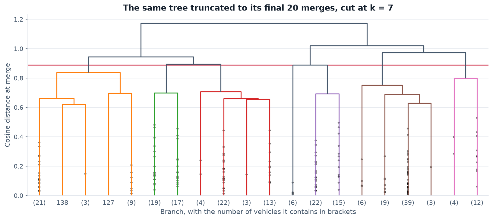
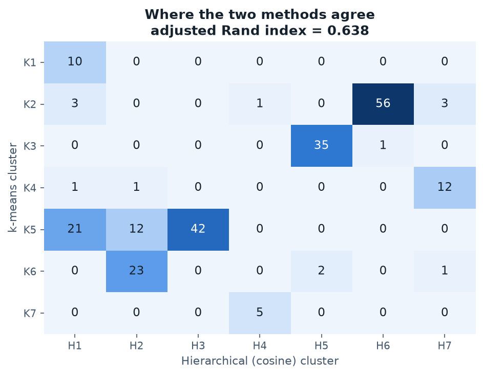
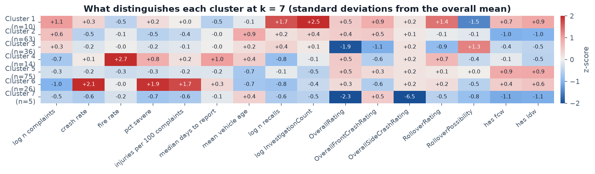

Clustering
Crash-test ratings sort vehicles into five stars. This section ignores that sorting entirely and asks a different question: if the only thing known about a vehicle were its measured safety record, what groups would the data put it in on its own?
Overview
Clustering is unsupervised learning. Nothing is labelled, nothing is being predicted, and the algorithm is never told what a good answer looks like. It receives a set of points described by numbers and is asked to find points that sit close together. What "close" means has to be defined before anything can happen, which is why a distance metric is the first decision rather than a detail, and why the same data can produce different groupings under different definitions of distance. The value of the exercise is that any structure found is a property of the measurements themselves, not an artefact of categories that a human imposed beforehand.
Two families of algorithm are used here. Partitional clustering, of which k-means is the standard example, demands the number of groups in advance. It places k centres, assigns each vehicle to the nearest one, moves each centre to the mean of the vehicles that chose it, and repeats until nothing moves. It is fast and it always returns exactly k groups, but it has to be told k, it assumes groups are roughly round and comparable in size, and it can settle into a poor arrangement depending on where the centres started. Hierarchical clustering makes no such demand. Every vehicle begins as its own cluster and the two closest clusters are merged repeatedly until one remains, recording the entire sequence as a tree. The number of groups is chosen afterwards by cutting that tree at a chosen height, which means a single run shows the structure at every possible resolution at once.

The distance metric matters more than it first appears. Euclidean distance is ordinary straight-line distance and is what k-means minimises; it responds to magnitude, so a vehicle with large values on many measures sits far from one with small values. Cosine distance is one minus the cosine of the angle between two vehicles treated as vectors, and it measures whether two records have the same shape regardless of magnitude. The assignment specifies cosine for the hierarchical clustering, and that choice fits the question: it groups vehicles whose safety measures rise and fall together, so a heavily complained-about model and a lightly complained-about one can land together if their problems are proportionally alike. Running the two methods under two different definitions of distance is also a check. Groups that survive both are structural; groups that appear under only one are an artefact of the metric.

The plan for discovery is to cluster on measured outcomes alone, then look at what the resulting groups turn out to contain. Body segment, manufacturer, model year and star rating are all removed before fitting and held back. If clusters built purely from complaint rates, recall counts and rollover figures turn out to align with segment or rating, that alignment was discovered rather than assumed. If they cut across those categories instead, the data is saying that the usual way of describing a vehicle is not the way its safety record behaves.
Data Prep
Clustering accepts only unlabeled numeric data. Every value must be a number, because distances cannot be computed on text, and no column may carry the answer, because an unsupervised method that can see a label is no longer unsupervised. The joined model-year table from Module 1 therefore cannot be used as it stands: it contains make, model, segment, the top complaint component, and two categorical bands, all of which are discarded here and held aside purely to interpret the result afterwards.
Three further preparation steps were necessary:
- Raw counts were dropped. Crash, fire, injury and death counts all scale with complaint volume. Keeping them would have let fleet size dominate every distance in the calculation, so the rates derived from them were kept instead.
- Skewed counts were log-transformed. Complaint volume, recalls and investigations span three orders of magnitude. Without a log transform the handful of very high-volume vehicles would set the geometry for everyone else.
- Every feature was standardised to mean 0 and standard deviation 1. This is not optional. The features arrive on wildly different scales, and an unscaled star rating running 1 to 5 would be overwhelmed by a complaint count running into the hundreds purely because of its units.
The result is a matrix of 229 vehicles by 16 numeric features, with no labels of any kind.

Data and code. Clustering input matrix: clustering_sample.csv · Resulting labels joined back to each vehicle: cluster_assignments.csv · Silhouette sweep: kmeans_silhouette_sweep.csv
Code: clustering_analysis.py — Python, using scikit-learn for k-means and silhouette scoring and SciPy for the cosine-distance hierarchical linkage and dendrogram.
Code
The analysis is written in Python in a single script,
clustering_analysis.py. k-means
comes from sklearn.cluster.KMeans, run with 25 random restarts at
each k so the reported solution is not an unlucky initialisation. Hierarchical
clustering uses scipy.cluster.hierarchy.linkage on a condensed
pdist matrix computed with metric="cosine". Average
linkage is used because Ward's method, the more common default, is defined only
for squared Euclidean distance and cannot be combined with cosine at all.
Silhouette scores come from sklearn.metrics, computed on the
precomputed cosine distance matrix for the hierarchical solutions so that each
method is scored under its own metric rather than a borrowed one.
Results
Choosing k
k-means was run for every k from 2 to 15 and scored by mean silhouette width, which measures how much closer each vehicle sits to its own cluster than to the next nearest one. The naive approach is to take the highest score, and here that would have been actively misleading: the curve keeps drifting upward as k grows, and the nominal maximum fell at k = 15, the edge of the tested range, where the smallest cluster contained three vehicles. That rising pattern is the signature of a dataset with no clean separation. The algorithm is slicing a continuum into ever smaller pieces, and smaller pieces always look tidier.
Two corrections were applied. For k-means, only interior local maxima of the curve were treated as candidates, which gave k = 7, 10 and 13. For the hierarchical solutions, any k producing a singleton cluster was discarded before reading off the peak, because a cluster of one vehicle has a silhouette width of 1 by definition and rewards the algorithm for stranding outliers. After those corrections both methods point to the same answer independently: k = 7 is a local maximum for k-means at 0.225 and the global maximum for cosine-based hierarchical clustering at 0.304.


Comparing three values of k

The hierarchical tree


Do the two methods agree?

What the clusters contain

Labelling the seven groups by what actually separates them, with segment composition checked only after fitting:
| Cluster | n | What defines it | What it turned out to contain |
|---|---|---|---|
| 1 | 10 | Extreme regulatory attention: 18 recalls and 10 investigations on average, roughly ten times the fleet norm, with the lowest rollover probability and full driver-assistance fitment | 7 of 10 are electric |
| 2 | 63 | Oldest vehicles, highest complaint volume, lowest crash rate, and almost no driver assistance | Mixed: SUVs, sedans, minivans |
| 3 | 36 | Highest rollover probability (0.18) and lowest crash-test ratings (4.1 stars) | Entirely trucks and large SUVs |
| 4 | 14 | Fire rate of 6.5%, roughly five times every other cluster, and the slowest reporting at 23 days | Luxury-weighted, mixed |
| 5 | 75 | Newest vehicles, universal collision and lane warning, near-perfect ratings, moderate everything else | The mainstream modern fleet |
| 6 | 26 | Highest crash rate (19%) and highest injury rate (14.5 per 100 complaints) on low complaint volume | Sedan and hybrid weighted |
| 7 | 5 | The only group rated 4 stars overall and 4 on rollover, with no driver assistance | Four sedans and one electric |
Conclusions
The clearest result is that the groups are real but weak. Silhouette widths peaking around 0.3, with visibly negative values for individual vehicles, say that vehicle safety records form a continuum rather than a set of distinct types. That is a substantive answer to the question this project asks, not a failed analysis. There is no natural population of "dangerous cars" sitting apart from a population of "safe cars"; vehicles shade into one another, which is precisely why a five-point star rating struggles to separate them.
Where structure does exist, it is organised by physics and equipment rather than by brand. The cleanest group in the entire solution is cluster 3, which contains trucks and large SUVs and nothing else, and which the algorithm identified without ever being shown a body style. It was separated by rollover probability and crash-test score alone. Cluster 5 is likewise defined by universal driver-assistance fitment and recent model years. Vehicle height and the equipment fitted turn out to shape the safety record far more than the manufacturer does.
Two groups complicate the picture in ways worth carrying into later modules. Cluster 6 has the highest crash and injury rates in the fleet on low complaint volume, while cluster 2 has the highest complaint volume and the lowest crash rate. Complaint volume and complaint severity are close to opposites. The models people complain about most are not the models whose complaints describe the worst outcomes, which means any future prediction built on volume alone would point in the wrong direction.
Finally, the two methods agreeing at an adjusted Rand index of 0.638 while using different distance metrics is reassuring about the groups that survived both. The agreement is substantial but incomplete, and the disagreements fall where the continuum is densest, exactly where a borderline vehicle could reasonably be placed either way.